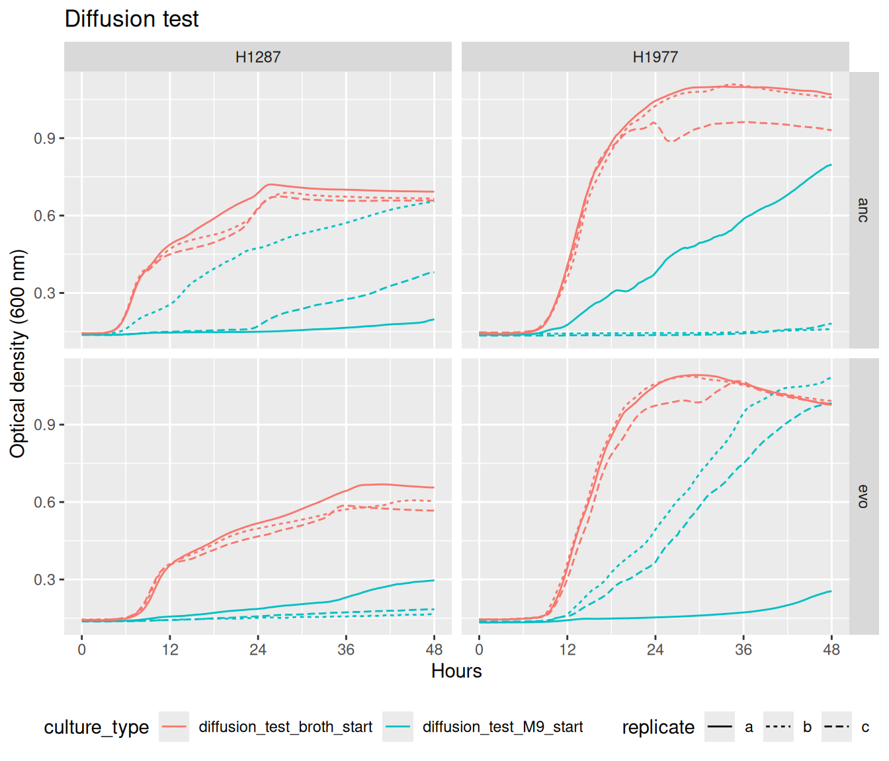
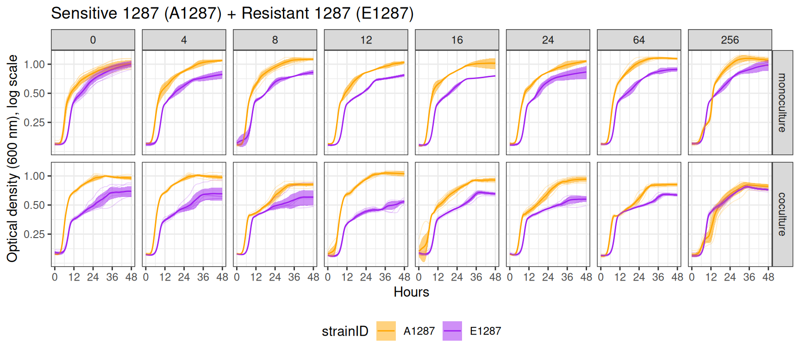
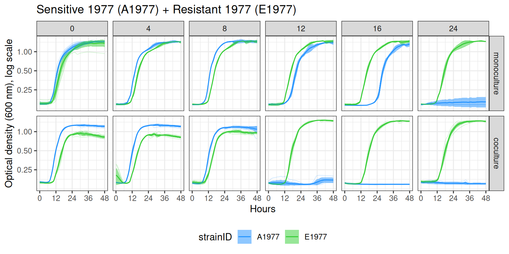
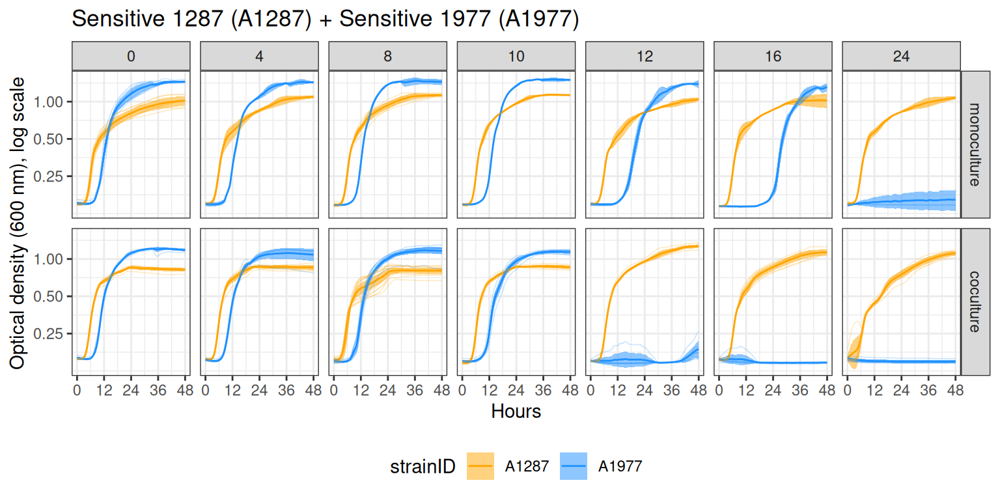
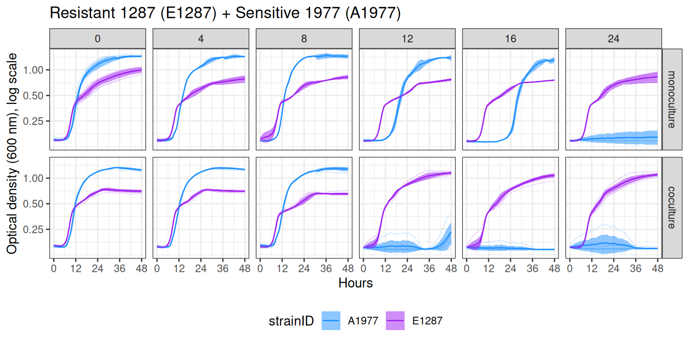
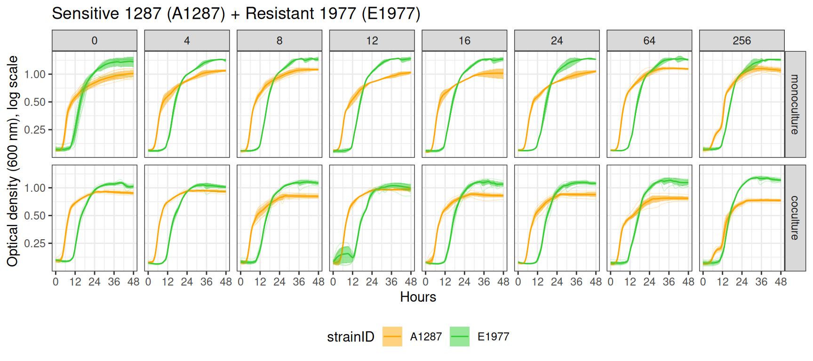
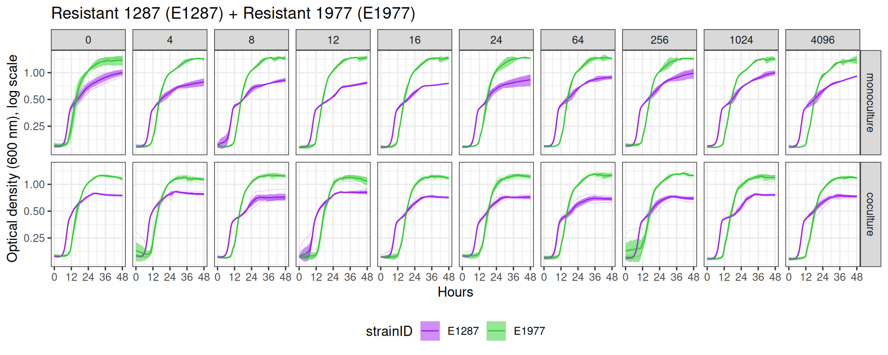

03.C Growth in pairs and monoculture
Competition outcomes
1 Introduction
Strain naming convention: 1287 = Citrobacter koseri 1287, 1977 = Pseudomonas chlororaphis 1977, A = Ancestral/Streptomycin sensitive, E = Evolved/Streptomycin resistant.
Here we compare the growth of each strain in monoculture against its growth when sharing a membrane-separated well with a competitor, across a range of streptomycin concentrations.
2 Setup
2.1 Libraries
2.2 Global variables
2.3 Functions
This function collects all the data from monocultures and cocultures for the selected species pair. Only monoculture data from streptomycin concentrations tested in co-cultures is included.
Show/hide code
collect_sp_pairs <- function(df, competition_pair, strep_thresh) {
strainpairs <- stringr::str_split(competition_pair, "_")[[1]]
df %>%
mutate(streptomycin = if_else(plate_name == "plate01", 0, streptomycin)) %>%
mutate(strainID = make_strainID(evolution, strain)) %>%
filter(strainID %in% strainpairs) %>%
filter(str_detect(culture_type, "diffusion", negate = T)) %>%
filter(streptomycin <= {{ strep_thresh }}) %>%
filter(
(culture_type == "coculture" &
competition_pair == {{ competition_pair }}) |
culture_type == "monoculture"
) %>%
mutate(
culture_type = factor(
culture_type,
levels = c("monoculture", "coculture")
)
)
}This function plots the output from the collect_sp_pairs function.
Show/hide code
plot_sp_pairs <- function(df, title) {
df_cl <- df %>%
mutate(seconds = seconds - seconds %% 1200) %>%
mutate(hours = seconds / 3600) %>%
summarize(
y = mean(OD600_rollmean),
sd = sd(OD600_rollmean),
n = n(),
.by = c(hours, strainID, streptomycin, competition_pair, culture_type)
) %>%
mutate(ymin = y - 1.96 * sd / sqrt(n), ymax = y + 1.96 * sd / sqrt(n))
ggplot2::ggplot() +
ggplot2::geom_line(
data = df_cl,
aes(
x = hours,
y = y,
color = strainID
),
) +
ggplot2::geom_ribbon(
data = df_cl,
aes(
x = hours,
ymin = ymin,
ymax = ymax,
fill = strainID,
group = interaction(strainID, streptomycin, culture_type)
),
alpha = 0.5
) +
ggplot2::geom_line(
data = df,
aes(
x = hours,
y = OD600_rollmean,
color = strainID,
group = interaction(well, plate_name)
),
alpha = 0.25,
linewidth = 0.25
) +
ggplot2::labs(x = "Hours", y = "OD600") +
ggplot2::scale_x_continuous(
breaks = seq(0, 48, 12),
labels = seq(0, 48, 12)
) +
ggplot2::labs(
y = "Optical density (600 nm), log scale",
x = "Hours",
title = {{ title }}
) +
ggplot2::scale_color_manual(values = straincols) +
ggplot2::scale_fill_manual(values = straincols) +
ggplot2::scale_y_continuous(trans = "log", breaks = c(0, 0.25, 0.5, 1)) +
ggplot2::facet_grid(culture_type ~ streptomycin) +
ggplot2::theme_bw() +
theme(legend.position = "bottom")
}2.4 Read data
3 Diffusion test
Plot the co-cultures growing on M9 compared to the control (column 1 and 3). On the plate, column \(n=\{1\dots11\}\) is connected to column \(n+1\) with a 0.22 μm membrane allowing free diffusion of resources and metabolic byproducts but not cells. These experiments were all conducted with no streptomycin.
Show/hide code
pdiffusiontest <- gcurves %>%
filter(str_detect(culture_type, "diffusion")) %>%
filter(str_detect(strain, "NANA", negate = TRUE)) %>%
ggplot() +
ggplot2::geom_line(aes(
x = hours,
y = OD600_rollmean,
lty = replicate,
color = culture_type,
group = interaction(well, plate_name)
)) +
ggplot2::labs(x = "Hours", y = "OD600") +
ggplot2::scale_x_continuous(
breaks = seq(0, 48, 12),
labels = seq(0, 48, 12)
) +
labs(y = "Optical density (600 nm)", x = "Hours", title = "Diffusion test") +
facet_grid(evolution ~ strain) +
theme(legend.position = "bottom")
ggsave(
here::here(figs, "coculture_diffusion_test.svg"),
plot = pdiffusiontest,
device = "svg",
width = 7,
height = 6
)
4 Co-culture and monoculture growth
4.1 A1287 + E1287
Show/hide code
A1287E1287 <- collect_sp_pairs(
gcurves,
competition_pair = "A1287_E1287",
strep_thresh = 256
) %>%
filter(streptomycin != 10) %>%
write_tsv(here::here(data_processed, "competition_A1287_E1287_final.tsv"))
pA1287E1287 <- plot_sp_pairs(
A1287E1287,
title = "Sensitive 1287 (A1287) + Resistant 1287 (E1287)"
)
ggsave(
here::here(figs, "A1287_E1287.svg"),
plot = pA1287E1287,
device = "svg",
width = 9,
height = 4
)
4.2 A1977 + E1977
Show/hide code
A1977E1977 <- collect_sp_pairs(
gcurves,
competition_pair = "A1977_E1977",
strep_thresh = 24
) %>%
# no co-cultures for these pairs done at 10 ug/ml
filter(streptomycin != 10) %>%
# filter out the strange streptomycin 8 ug/ml monoculture samples
filter(
!(streptomycin == 8 & plate_name == "plate08" & strainID == "A1977")
) %>%
write_tsv(here::here(data_processed, "competition_A1977_E1977_final.tsv"))
pA1977E1977 <- plot_sp_pairs(
A1977E1977,
title = "Sensitive 1977 (A1977) + Resistant 1977 (E1977)"
)
ggsave(
here::here(figs, "A1977_E1977.svg"),
plot = pA1977E1977,
device = "svg",
width = 8,
height = 4
)
4.3 A1287 + A1977
Show/hide code
A1287A1977 <- collect_sp_pairs(
gcurves,
competition_pair = "A1287_A1977",
strep_thresh = 24
) %>%
# filter out the strange streptomycin 8 ug/ml monoculture samples
filter(
!(streptomycin == 8 & plate_name == "plate08" & strainID == "A1977")
) %>%
write_tsv(here::here(data_processed, "competition_A1287_A1977_final.tsv"))
pA1287A1977 <- plot_sp_pairs(
A1287A1977,
title = "Sensitive 1287 (A1287) + Sensitive 1977 (A1977)"
)
ggsave(
here::here(figs, "A1287_A1977.svg"),
plot = pA1287A1977,
device = "svg",
width = 8,
height = 4
)
4.4 E1287 + A1977
Show/hide code
E1287A1977 <- collect_sp_pairs(
gcurves,
competition_pair = "E1287_A1977",
strep_thresh = 24
) %>%
# no co-cultures for these pairs done at 10 ug/ml
filter(streptomycin != 10) %>%
# filter out the strange streptomycin 8 ug/ml monoculture samples
filter(
!(streptomycin == 8 & plate_name == "plate08" & strainID == "A1977")
) %>%
write_tsv(here::here(data_processed, "competition_E1287_A1977_final.tsv"))
pE1287A1977 <- plot_sp_pairs(
E1287A1977,
title = "Resistant 1287 (E1287) + Sensitive 1977 (A1977)"
)
ggsave(
here::here(figs, "E1287_A1977.svg"),
plot = pE1287A1977,
device = "svg",
width = 8,
height = 4
)
4.5 A1287 + E1977
Show/hide code
A1287E1977 <- collect_sp_pairs(
gcurves,
competition_pair = "A1287_E1977",
strep_thresh = 256
) %>%
# no co-cultures for these pairs done at 10 ug/ml
filter(streptomycin != 10) %>%
# filter out the strange streptomycin 8 ug/ml monoculture samples
filter(
!(streptomycin == 8 & plate_name == "plate08" & strainID == "A1977")
) %>%
write_tsv(here::here(data_processed, "competition_A1287_E1977_final.tsv"))
pA1287E1977 <- plot_sp_pairs(
A1287E1977,
title = "Sensitive 1287 (A1287) + Resistant 1977 (E1977)"
)
ggsave(
here::here(figs, "A1287_E1977.svg"),
plot = pA1287E1977,
device = "svg",
width = 9,
height = 4
)
4.6 E1287 + E1977
Show/hide code
E1287E1977 <- collect_sp_pairs(
gcurves,
competition_pair = "E1287_E1977",
strep_thresh = 8025600
) %>%
filter(streptomycin != 10) %>%
# filter out the strange streptomycin 8 ug/ml monoculture samples
filter(
!(streptomycin == 8 & plate_name == "plate08" & strainID == "A1977")
) %>%
# removes a bad replicate where OD is over 0.8 at time 0
filter(
!(culture_type == "monoculture" &
plate_name == "plate11" &
joined_well_pair == "E07E08")
) %>%
write_tsv(here::here(data_processed, "competition_E1287_E1977_final.tsv"))
pE1287E1977 <- plot_sp_pairs(
E1287E1977,
title = "Resistant 1287 (E1287) + Resistant 1977 (E1977)"
)
ggsave(
here::here(figs, "E1287_E1977.svg"),
plot = pE1287E1977,
device = "svg",
width = 10,
height = 4
)